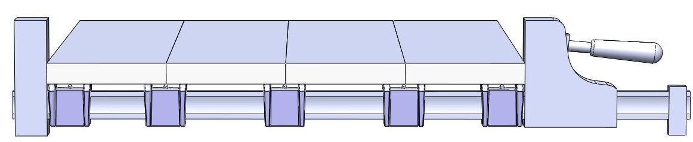
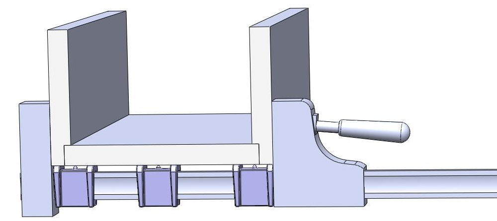
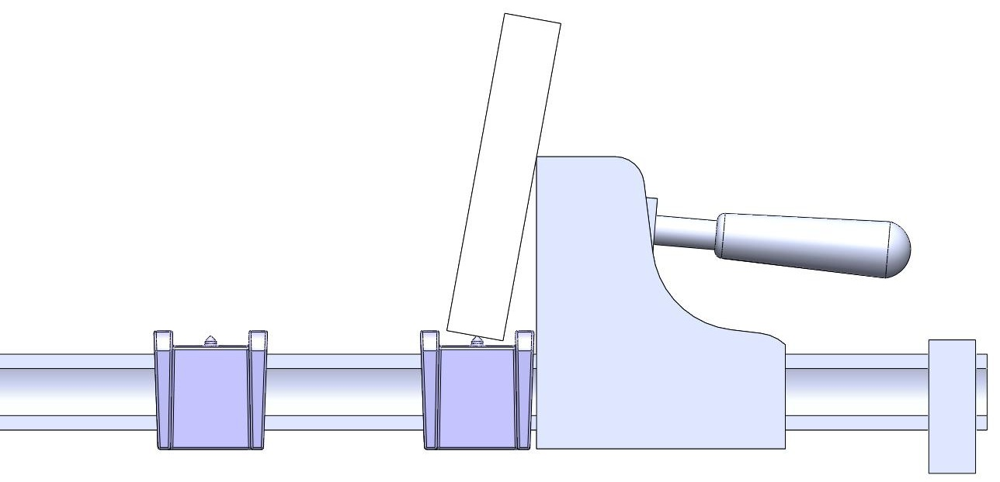

Clamp Saddle
If you own parallel bar clamps you probably know the frustration of messy glue smear on your clamps and woodworking projects. Finally there is a solution!
The Tintic Clamp Saddle suspends the glue joint above the clamp bars and sheds the dripping glue away from your clamps. No more scraping dried glue off of your expensive clamps and no more glue smear on your woodworking projects saving you time and frustration. The raised shoulders on each end ensure that the glue joint does not directly contact the Clamp Saddle eliminating glue smear on the bottom of your project.

Use them again and again for many of your gluing projects including panel glue ups, cope and stick joints for cabinet doors and box joints. They are even designed with a 1” valley for the application of standard masking tape if desired. They are constructed of rugged polypropylene which is highly resistant to most wood glues. Removal of the dried on glue is a cinch. They easily snap on and fit snuggly to all major parallel bar clamp brands including Bessey, Jorgenson, Jet and Erwin. Simply push them over the bar of your clamp and they stay in place but require little effort to reposition as needed.

They are designed with a button at the top center so you can set the first glued edge of a board down while spreading glue on the opposite edge without getting excess glue on your clamps or other working surfaces. Simply spread glue on one edge, flip the board over and set the wet edge in the center of the Clamp Saddles leaning the board against the jaw of your clamp. This frees up both of your hands for spreading glue and eliminates the mess.

Required Quantity For Panel Glue-ups
The Clamp Saddle is sold in a 16 pack. The number of Clamp Saddles needed for a panel glue-up depends on the number of clamps being used and the number of boards being glued. The following equation can be used to calculate the required number of Clamp Saddles needed for your project.
Boards x Clamps + Clamps
Example
3 boards x 4 clamps + 4 clamps = 16 Clamp Saddles